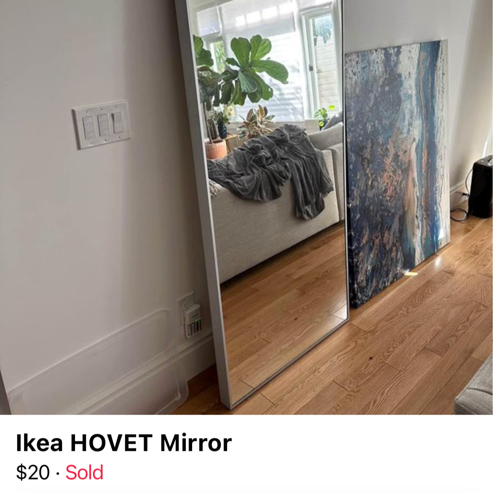
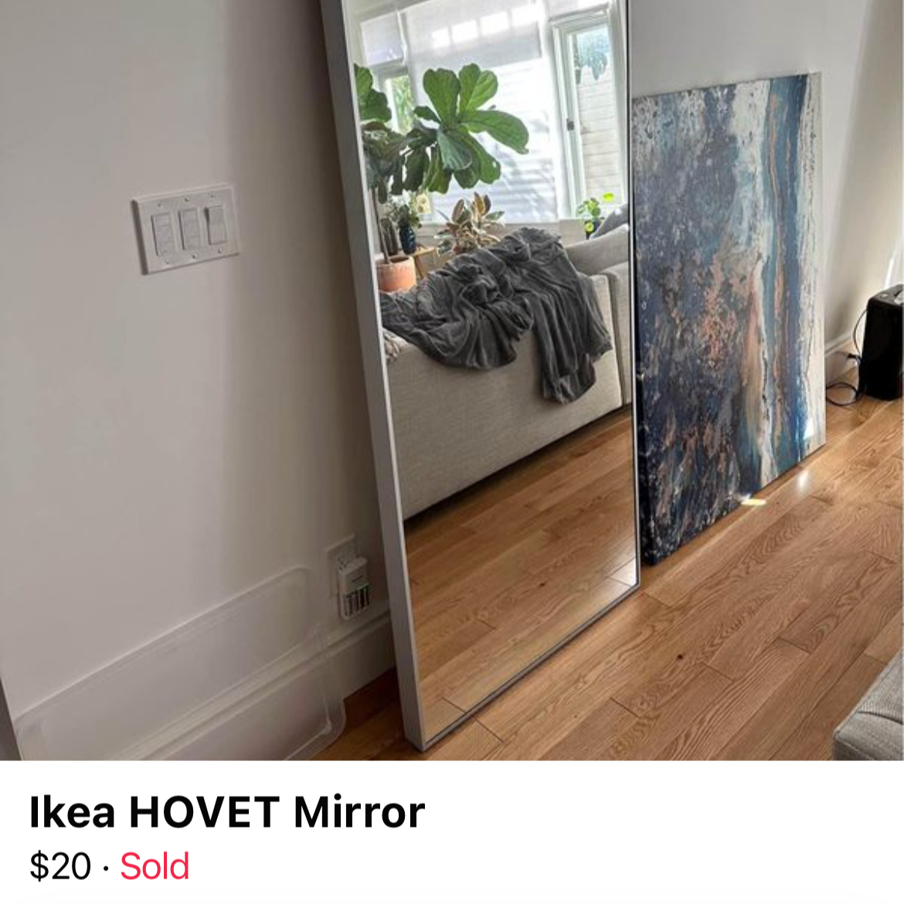

ONLINE VS IN REAL LIFE
I can scroll through Facebook market all day long. I love finding a good deal or lowballing for items just to see how low a seller will go. Here are a few of my finds. An Ikea dresser for $35 perfect for my new room! I found this at the perfect time when I was moving into a new place. I never really get clothes or accessories from FB but I found this cute vintage Paul Frank shoulder for $15! Which I then flipped and resold for $50. And lastly one of my best finds to date is the large Ikea mirror for $20 in (perfect condition!) when it's original retail price was $130.
 
